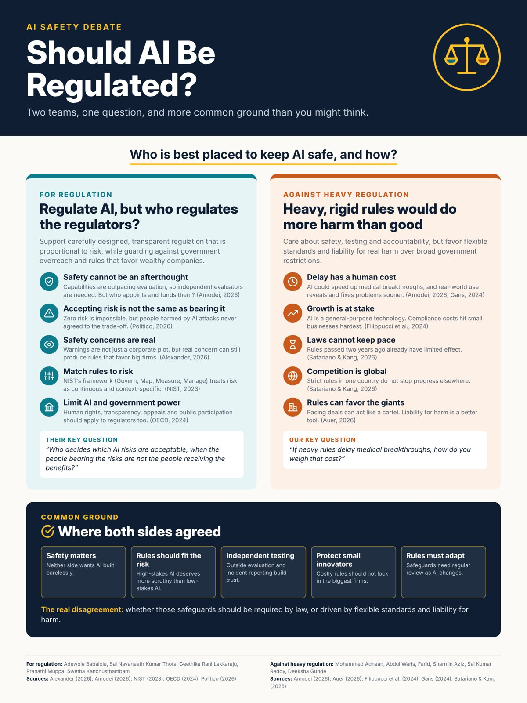

Introduction
Few questions in AI are argued as loudly as whether governments should regulate it, and most discussions only show one side. During our AIML-500 residency, two teams debated the question using current sources, including Dario Amodei’s essay “We Must Pace the Frontier.” This poster puts both cases next to each other so a reader can compare them fairly in a few minutes.
Description
A one-page poster that summarizes the AI safety debate. One side argues for carefully designed, risk-based regulation with accountable regulators. The other side, my team, argues against heavy, rigid regulation and for flexible standards and liability for real harm. Each side shows its five main arguments, its sources and its key question, and the poster ends with the points where both sides agreed.
Teams: For regulation: Adewole Babalola, Sai Navaneeth Kumar Thota, Geethika Rani Lakkaraju, Pranathi Muppa and Swetha Kanchusthambam. Against heavy regulation: Mohammed Adnaan, Abdul Waris, Farid, Sharmin Aziz, Sai Kumar Reddy and Deeksha Gunde.
Objective
I wanted to show that I can engage with AI policy, not only AI technology, and that I can present a disagreement fairly. The goal was a single page that helps students, data professionals and managers understand both positions and see where the real disagreement lies.
Process
- Researched a position as a team. My team read the assigned sources and built our case against heavy regulation, with a written position paper and a slide deck.
- Debated the opposing team. The other team presented the case for carefully designed regulation, with its own paper, deck and sources.
- Compared both positions. After the debate, I put the two papers side by side and pulled out each team’s five main arguments and key question.
- Found the common ground. Both teams agreed on more than expected, such as risk-based rules, independent testing and protecting small innovators. I added that as its own section.
- Designed the poster. I used one color for each side, kept every argument short and cited, and placed the common ground at the bottom as the takeaway.
The two positions at a glance
| Question | For regulation | Against heavy regulation |
|---|---|---|
| Main concern | Risks to people, institutions and security, and unaccountable regulators | Delayed benefits, outdated laws and rules that favor big companies |
| Preferred tool | Tiered, risk-based rules with independent evaluators | Flexible standards and liability for actual harm |
| Biggest worry about the other side | Self-regulation cannot be verified by the public | Heavy rules slow progress and lock in large firms |
| Where they agree | Safety matters, rules should match the risk, independent testing builds trust, small innovators need protection, and rules must keep adapting | |
Tools and Technologies Used
Value Proposition
Unique Value
Most debate materials argue one side. This poster was made by someone who argued one side and then mapped both, which shows that the two teams agreed on most of the safeguards and disagreed mainly on whether they should be required by law. As an analytics engineer, I see the same pattern at work: teams rarely disagree about whether data needs checks, only about who enforces them.
Relevance
AI rules are being written right now, and data and AI professionals will have to work within them. Understanding both sides of the debate helps teams plan for regulation, explain trade-offs to leaders, and design safeguards like testing, monitoring and incident reporting before they are required.
References
- Alexander, S. (2026, October 15). AI safety is not a corporate plot. Astral Codex Ten. https://www.astralcodexten.com/p/ai-safety-is-not-a-corporate-plot
- Amodei, D. (2026, September 12). We must pace the frontier. https://darioamodei.com/post/we-must-pace-the-frontier
- Auer, D. (2026, September 14). Move slow and collude: The antitrust problem with pacing AI. International Center for Law & Economics. https://laweconcenter.org/resources/move-slow-and-collude-the-antitrust-problem-with-pacing-ai/
- Filippucci, F., Gal, P., Jona-Lasinio, C., Leandro, A., & Nicoletti, G. (2024). The impact of artificial intelligence on productivity, distribution and growth: Key mechanisms, initial evidence and policy challenges (OECD Artificial Intelligence Papers, No. 15). OECD Publishing. https://doi.org/10.1787/8d900037-en
- Gans, J. S. (2024). How learning about harms impacts the optimal rate of artificial intelligence adoption (NBER Working Paper No. 32105). National Bureau of Economic Research. https://doi.org/10.3386/w32105
- National Institute of Standards and Technology. (2023). Artificial intelligence risk management framework (AI RMF 1.0) (NIST AI 100-1). https://doi.org/10.6028/NIST.AI.100-1
- Organisation for Economic Co-operation and Development. (2024). Recommendation of the Council on Artificial Intelligence (OECD/LEGAL/0449). https://legalinstruments.oecd.org/en/instruments/OECD-LEGAL-0449
- Politico. (2026, October 4). ‘The world should accept some bad things happening’ for the benefits of AI. https://www.politico.com/news/2026/10/04/sam-altman-decoded-interview-ai-0110621
- Satariano, A., & Kang, C. (2026, September 27). As A.I. accelerates, governments are increasingly being left behind. The New York Times.